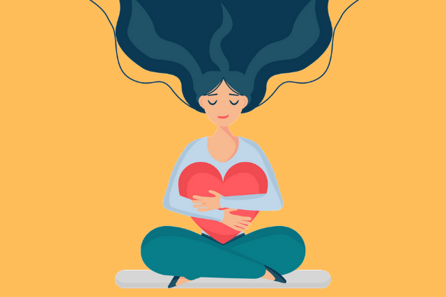

Home / Home
Mengenal diri sendiri merupakan hubungan timbal balik antara seseorang dengan diri sendiridi Kunci pengembangan diri adalah kesadaran diri. Ini berlaku bukan hanya untuk kesuksesan profesional, tetapi juga banyak aspek kehidupan lainnya, termasuk masalah didalam keluarga, sosial atau masyarakat dan spiritual. menyadari bakat dan kemampuan dan tahu bagaimana menggunakannya untuk mencapai tujuan ini.
Mencintai diri sendiri atau self love adalah perasaan percaya dan bangga atas kemampuan diri. Self love membantu kita menikmati saat-saat indah dalam hidup. Selain itu, self love membantu kita percaya (bahwa kita) memiliki kemampuan menangani pada saat-saat buruk
Berikut ini cara mempraktikkan self love menurut psikologi: Praktikkan perawatan diri. Perawatan diri ini merupakan wujud dari rasa cinta kita prihal mencintai diri sendiri dengan merawat diri kita. Belajar kesadaran diri. Kesadara dangat lah diperlukan dalam kehidupan untuk menyeimbangkan diri. belajar kesadaran diri artinya kita sadar akan kekurangan dan kelebihan kita, tetapi kita kita tidak menjadikan kekurangan itu suatu yang buru, justrus itu adalah sebuah tantangan media belajar kita untuk menghadapi kondisi buruk dalam diri kita Mempertanyakan pikiran negatif. Disini kita belajar berfikis secara jernih, mempertanyakan pikiran pikiran negatif yang selama ini terpendam untuk menemukan suatu solusi untuk memperbaiki dan menerima kekurangan kita. Berhenti membandingkan diri dengan orang lain Membandingkan diri sendiri dengan orang lain dapat merusak penghargaan diri dan self love dan membuat kita tidak percaya diri dan malu atas kekurangan kita. Tetapkan batasan dan bersikap tegas. Menetapkan batasan fisik dan emosional dapat membantu kita mengontrol cara memperlakukan diri sendiri dan cara orang lain memperlakukan kita. Jauhi orang toxic. Orang toxic dapat membatasi kemampuan untuk menumbuhkan self love. Meskipun kita dapat mencintai diri sendiri, akan lebih mudah jika orang-orang di sekitar kita memberikan penegasan dan rasa hormat yang positif.